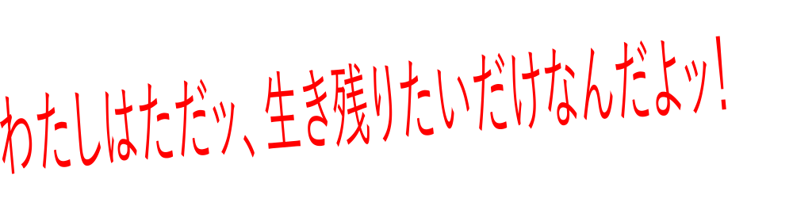
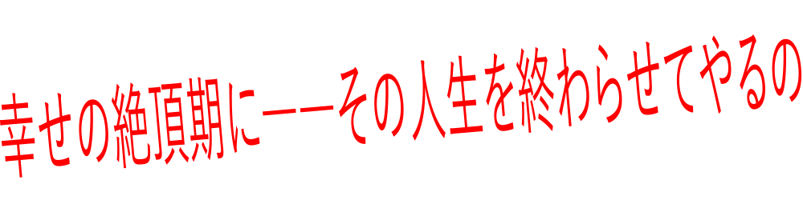

-

- 
-

- 
-
 CV♥大野柚布子
CV♥大野柚布子 年齢♥14歳誕生日♥4月8日（おひつじ座）身長♥145cm体重♥41kg血液型♥A型都内中学に通う、２年生。人一倍優しい心を持つが、他者と接するのが苦手。誰かに認められた経験がないため、自己肯定感がない。学校では、雫芽さりなのグループにイジメを受け、家では兄の要に虐待されている。居場所がなく『死にたい』と願う毎日。そんなある日、『魔法少女サイト』から魔法のステッキが送られてくる。所持するステッキは、銃型ステッキ。撃った相手を瞬間移動させる能力を持つ。
年齢♥14歳誕生日♥4月8日（おひつじ座）身長♥145cm体重♥41kg血液型♥A型都内中学に通う、２年生。人一倍優しい心を持つが、他者と接するのが苦手。誰かに認められた経験がないため、自己肯定感がない。学校では、雫芽さりなのグループにイジメを受け、家では兄の要に虐待されている。居場所がなく『死にたい』と願う毎日。そんなある日、『魔法少女サイト』から魔法のステッキが送られてくる。所持するステッキは、銃型ステッキ。撃った相手を瞬間移動させる能力を持つ。 -
 CV♥茜屋日海夏
CV♥茜屋日海夏 年齢♥14歳誕生日♥4月9日（おひつじ座）身長♥152cm体重♥43kg血液型♥AB型彩の同級生。表情の起伏があまりなく、何を考えているのか分かりにくい。頭脳明晰で、状況判断も的確だが、この世界そのものに絶望し、自分の命さえ軽んじる危うさがある。どこか孤独を感じさせるその姿の裏には、過去に経験した壮絶な不幸が隠されていた。所持するステッキは、スマートフォン型ステッキ。時間停止の能力を持つ。
年齢♥14歳誕生日♥4月9日（おひつじ座）身長♥152cm体重♥43kg血液型♥AB型彩の同級生。表情の起伏があまりなく、何を考えているのか分かりにくい。頭脳明晰で、状況判断も的確だが、この世界そのものに絶望し、自分の命さえ軽んじる危うさがある。どこか孤独を感じさせるその姿の裏には、過去に経験した壮絶な不幸が隠されていた。所持するステッキは、スマートフォン型ステッキ。時間停止の能力を持つ。 -
 CV♥鈴木愛奈
CV♥鈴木愛奈 年齢♥13歳誕生日♥12月8日（いて座）身長♥147cm体重♥42kg血液型♥B型魔法少女。かつて露乃と共に『魔法少女サイト』について探っていたが、とある事情により、魔法少女を殺害しステッキを奪う魔法少女狩り(マジカルハンター)となる。『他人の容姿をコピーするステッキ』で、巨乳メガネの美人に変貌。性格も一変、基本、自分のことしか考えない、お気楽クズに。所持するステッキは多数。お気に入りは、ハンマー型の打撃ステッキと杖型の雷撃ステッキ。
年齢♥13歳誕生日♥12月8日（いて座）身長♥147cm体重♥42kg血液型♥B型魔法少女。かつて露乃と共に『魔法少女サイト』について探っていたが、とある事情により、魔法少女を殺害しステッキを奪う魔法少女狩り(マジカルハンター)となる。『他人の容姿をコピーするステッキ』で、巨乳メガネの美人に変貌。性格も一変、基本、自分のことしか考えない、お気楽クズに。所持するステッキは多数。お気に入りは、ハンマー型の打撃ステッキと杖型の雷撃ステッキ。 -
 CV♥芹澤 優
CV♥芹澤 優 年齢♥14歳誕生日♥7月5日（カニ座）身長♥ 146cm体重♥40kg血液型♥ AB型国民的アイドルユニット『いぬあそび。』のメンバー、チワワ担当の『にじみん』として大人気の歌手。プロデュースした『おしりんご』グッズで、巨額の収入がある。フレンドリーで、笑顔を絶やさないほがらかな性格だが、極端な二面性があり、怒ると我を失ってしまう癖がある。
年齢♥14歳誕生日♥7月5日（カニ座）身長♥ 146cm体重♥40kg血液型♥ AB型国民的アイドルユニット『いぬあそび。』のメンバー、チワワ担当の『にじみん』として大人気の歌手。プロデュースした『おしりんご』グッズで、巨額の収入がある。フレンドリーで、笑顔を絶やさないほがらかな性格だが、極端な二面性があり、怒ると我を失ってしまう癖がある。 -
CV♥山崎はるか

 年齢♥14歳誕生日♥4月25日（おうし座）身長♥156cm体重♥ 45kg血液型♥O型彩の同級生。彩をイジメていたグループのリーダー。 親友の仇として彩を襲うも、時間停止をした露乃に逆襲され、大怪我を負う。首に刻まれた傷を恨みに思い、彩と露乃、２人への復讐を誓う。 そんな折、管理人の漆（なな）が接触、梨ナに代わる新たな魔法少女狩り(マジカルハンター)として、魔法少女になる。運動神経抜群、ヨーヨー型ステッキを操り、あらゆるものを切り裂くことができる。
年齢♥14歳誕生日♥4月25日（おうし座）身長♥156cm体重♥ 45kg血液型♥O型彩の同級生。彩をイジメていたグループのリーダー。 親友の仇として彩を襲うも、時間停止をした露乃に逆襲され、大怪我を負う。首に刻まれた傷を恨みに思い、彩と露乃、２人への復讐を誓う。 そんな折、管理人の漆（なな）が接触、梨ナに代わる新たな魔法少女狩り(マジカルハンター)として、魔法少女になる。運動神経抜群、ヨーヨー型ステッキを操り、あらゆるものを切り裂くことができる。 -
CV♥ 原 由実
 年齢♥13歳誕生日♥11月6日（さそり座）身長♥144cm体重♥42kg血液型♥AB型もう一つの『魔法少女サイト』から、ステッキを与えられた魔法少女。物静かでデリケート。よくため息をつく。精神的に強い刺激を受けるとパニック発作を起こすため、精神安定剤が手放せない。所持するステッキは、カッター型ステッキ。治癒の能力を持つ。
年齢♥13歳誕生日♥11月6日（さそり座）身長♥144cm体重♥42kg血液型♥AB型もう一つの『魔法少女サイト』から、ステッキを与えられた魔法少女。物静かでデリケート。よくため息をつく。精神的に強い刺激を受けるとパニック発作を起こすため、精神安定剤が手放せない。所持するステッキは、カッター型ステッキ。治癒の能力を持つ。 -
CV♥M・A・O

 年齢♥15歳誕生日♥4月14日（おひつじ座）身長♥156cm体重♥47kg血液型♥A型小雨と同じ中学に通う魔法少女。極道『燐賀組』のお嬢様。武道一般にすぐれ、居合抜きの名手。沈着冷静で大人びた性格だが、世間の流行には疎かったりもする。得物＝ステッキは日本刀。すべてのものを断ち斬り、さらに斬ったものを硬化させる能力を持つ。
年齢♥15歳誕生日♥4月14日（おひつじ座）身長♥156cm体重♥47kg血液型♥A型小雨と同じ中学に通う魔法少女。極道『燐賀組』のお嬢様。武道一般にすぐれ、居合抜きの名手。沈着冷静で大人びた性格だが、世間の流行には疎かったりもする。得物＝ステッキは日本刀。すべてのものを断ち斬り、さらに斬ったものを硬化させる能力を持つ。 -
CV♥本渡 楓
 年齢♥14歳誕生日♥ 1月1日（やぎ座）身長♥ 142cm体重♥46kg血液型♥ B型小雨たちと同じ中学に通う魔法少女。家は大富豪。自宅のある島から毎朝ヘリで通学している。誇り高く、勝ち気で負けず嫌いな性格。身の回りのことは、すべて執事の山井に任せている。所持するステッキは、ホウキ型ステッキ。飛行能力を持つ。
年齢♥14歳誕生日♥ 1月1日（やぎ座）身長♥ 142cm体重♥46kg血液型♥ B型小雨たちと同じ中学に通う魔法少女。家は大富豪。自宅のある島から毎朝ヘリで通学している。誇り高く、勝ち気で負けず嫌いな性格。身の回りのことは、すべて執事の山井に任せている。所持するステッキは、ホウキ型ステッキ。飛行能力を持つ。 -
 CV♥松井恵理子
CV♥松井恵理子 年齢♥13歳誕生日♥11月12日（さそり座）身長♥155cm体重♥46kg血液型♥O型小雨たちの同級生。魔法少女だが、実は『男の娘』。仲間と認めた相手には忠実、力を尽くして守ろうとする。所持するステッキは、リング型ステッキ。一度接触した相手の精神と肉体にコネクト、様々な情報を読み取り、時には肉体を操ることさえできる。テレパシーで仲間同士を繋げる能力も持つ。
年齢♥13歳誕生日♥11月12日（さそり座）身長♥155cm体重♥46kg血液型♥O型小雨たちの同級生。魔法少女だが、実は『男の娘』。仲間と認めた相手には忠実、力を尽くして守ろうとする。所持するステッキは、リング型ステッキ。一度接触した相手の精神と肉体にコネクト、様々な情報を読み取り、時には肉体を操ることさえできる。テレパシーで仲間同士を繋げる能力も持つ。 -
 CV♥Lynn
CV♥Lynn 年齢♥15歳誕生日♥9月28日（てんびん座）身長♥155cm体重♥46kg血液型♥A型都内高校に通う、ＪＫ魔法少女。オシャレでスタイル抜群。一見ギャルっぽく見えるが中身は別。運動神経が抜群で、所持するネックレス型ステッキにより、その能力を極限まで増大させることができる。能力発動時は、超高速での疾走、超人的パワーでの打撃などが可能となる。
年齢♥15歳誕生日♥9月28日（てんびん座）身長♥155cm体重♥46kg血液型♥A型都内高校に通う、ＪＫ魔法少女。オシャレでスタイル抜群。一見ギャルっぽく見えるが中身は別。運動神経が抜群で、所持するネックレス型ステッキにより、その能力を極限まで増大させることができる。能力発動時は、超高速での疾走、超人的パワーでの打撃などが可能となる。 -
 CV♥岡本信彦
CV♥岡本信彦 彩の兄。文武両道、容姿端麗、性格良しの完璧人間。しかし、それは表の顔。裏では全ての人間を見下し、自分自身にしか価値を認めていない。父親を嫌悪し、日々のストレスは彩を殴って解消。目的のためには手段を選ばず、ゲームのように他人を弄ぶことに快楽を感じる。
彩の兄。文武両道、容姿端麗、性格良しの完璧人間。しかし、それは表の顔。裏では全ての人間を見下し、自分自身にしか価値を認めていない。父親を嫌悪し、日々のストレスは彩を殴って解消。目的のためには手段を選ばず、ゲームのように他人を弄ぶことに快楽を感じる。 -
 CV♥鈴木達央
CV♥鈴木達央 刑事。都内で連続する少女殺害事件を追っている。クールな美貌で、感情をあまり外に出さない。とある事件に疑念を抱き、被害者の所持する写真に『朝霧要』の名前を発見、朝霧家を訪れる。キレ者のようだが、どこか読めない不気味さがある男。
刑事。都内で連続する少女殺害事件を追っている。クールな美貌で、感情をあまり外に出さない。とある事件に疑念を抱き、被害者の所持する写真に『朝霧要』の名前を発見、朝霧家を訪れる。キレ者のようだが、どこか読めない不気味さがある男。 -
 CV♥安里勇哉
CV♥安里勇哉 『いぬあそび。』にじみんの熱狂的なファン。フリーター。グッズやコンサート代のために借金しまくり、生活は破綻しているが、現実逃避で無視。にじみんの存在が生きる全てである。にじみんを天使と崇拝する一方、それを妨げる人間には容赦がない。思い込みが強く、ストーカー的な一面も。
『いぬあそび。』にじみんの熱狂的なファン。フリーター。グッズやコンサート代のために借金しまくり、生活は破綻しているが、現実逃避で無視。にじみんの存在が生きる全てである。にじみんを天使と崇拝する一方、それを妨げる人間には容赦がない。思い込みが強く、ストーカー的な一面も。